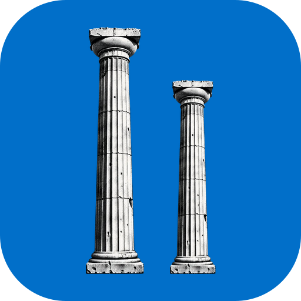

Pillr
Marketing for UK accountants and law firms, checked against the rules before it goes out.
pillr.orgThe company
Pillr handles marketing for UK accountancy and law firms. It learns how the firm already speaks, drafts posts in that voice, checks them against the regulator's rules, and waits for a partner to approve anything before it is published.
Mohammed Asif is CEO and one of four co-founders. He left his job to build it full time.
The week
At the start of the sprint Pillr had 3 paying customers, £158 a month, and 12 meetings behind it.
He set two experiments, each with a target written down. The first was personalised LinkedIn and Instagram outreach to firm owners who looked ready to buy, aimed at 9 replies and 3 demos. The second used Needle to find firms with that same intent, then cold calls from 13 UK regulator directories, aimed at 15 positive conversations and 4 demos. He made 450 outreach touches, 147 of them cold calls, with Emanuel Morhard as his mentor.
The written replies came in at 11, against a target of 9. He booked 9 demos and held 2 of them before the week ended. Cold calling reached 61 people. That produced 11 positive conversations, short of the 15 he had set, and 5 demos against a target of 4. Paying customers went from 3 to 6. A £16,000 enterprise order was confirmed by email during the sprint. When the letter was written, that contract was not yet signed and not yet paid.